Pour les mairies et les intercommunalités
L'espace de la Ville, écran par écran
Ce que voient vos agents et vos élus, sur ordinateur et sur téléphone, et ce que voient vos clubs. L'exemple suit une commune fictive, la Ville de Montrivage, ses trois installations et ses trois clubs.
Écrans tirés des maquettes de l'application ; noms, dates et chiffres fictifs. Touchez un écran pour l'agrandir.
L'accueil de la Ville
Ce qui vous attend, vos six actions, la semaine de vos installations, vos clubs en nombres et vos actualités.

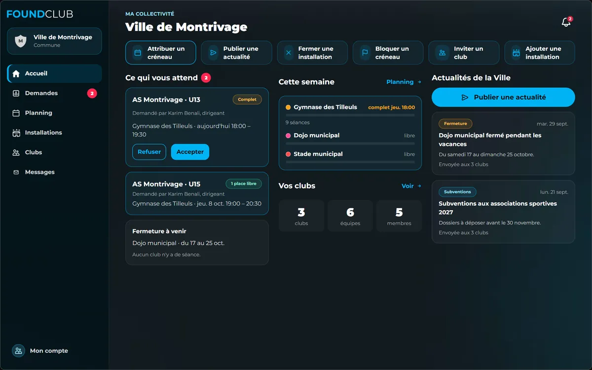

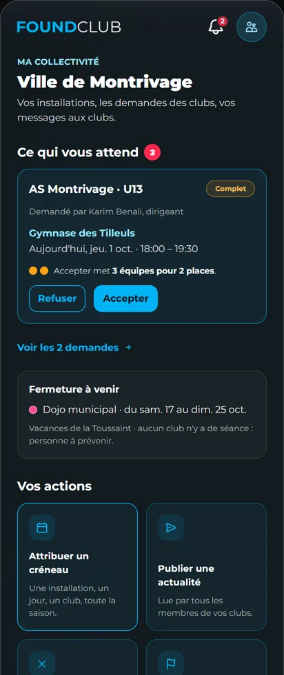
Les demandes des clubs
Hors de ses créneaux, la séance d'un club vous arrive en demande. Vous voyez qui est déjà là, puis vous acceptez ou refusez avec un mot ; le club est prévenu.

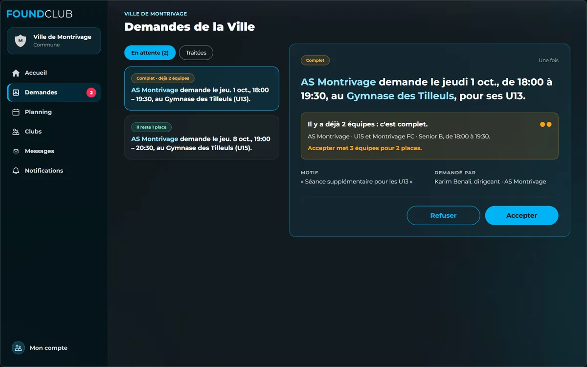

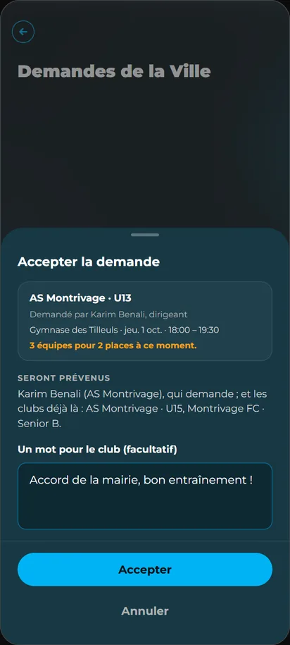
Vos installations et les créneaux de la saison
Chaque installation a son adresse et le nombre d'équipes qu'elle accueille à la fois. Un créneau attribué revient chaque semaine : le club y pose ses entraînements sans rien vous demander.

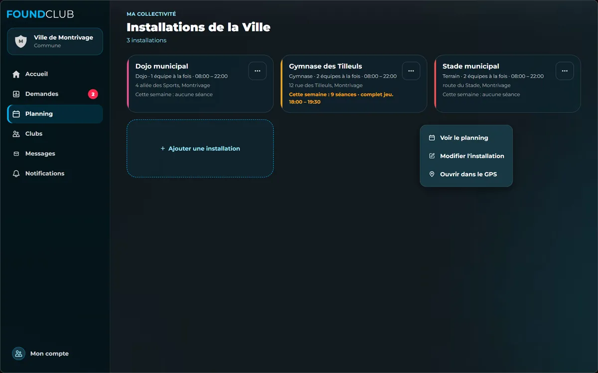

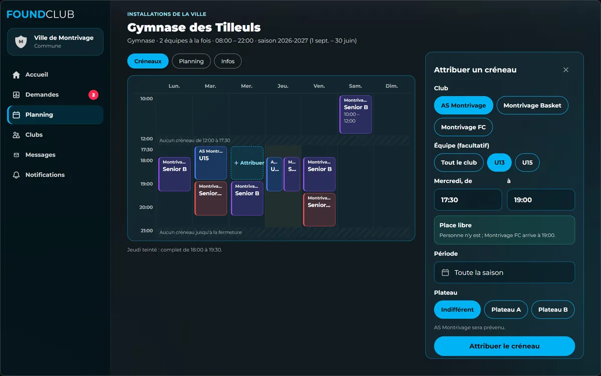
Le planning, et les fermetures
La mairie et les clubs rattachés voient les mêmes réservations. Pour des vacances, des travaux ou une manifestation, vous fermez une installation : les clubs touchés sont prévenus, rien n'est annulé à leur place.

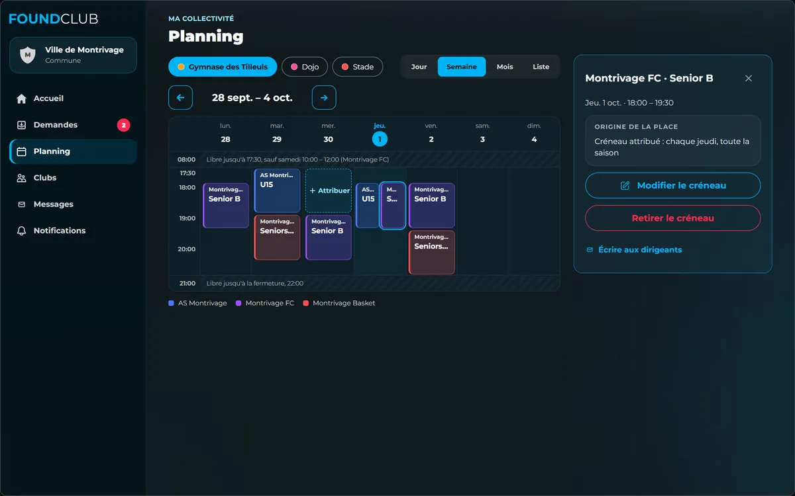

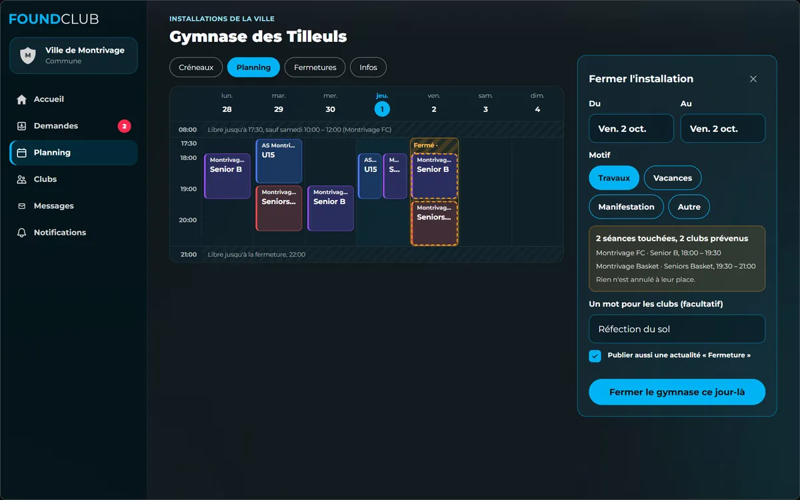
Parler à vos clubs
Une actualité de la Ville, avec une photo ou un document, pour tous les membres de vos clubs, leurs seuls dirigeants ou les clubs d'une installation. Et un canal où la Ville et les dirigeants se répondent.

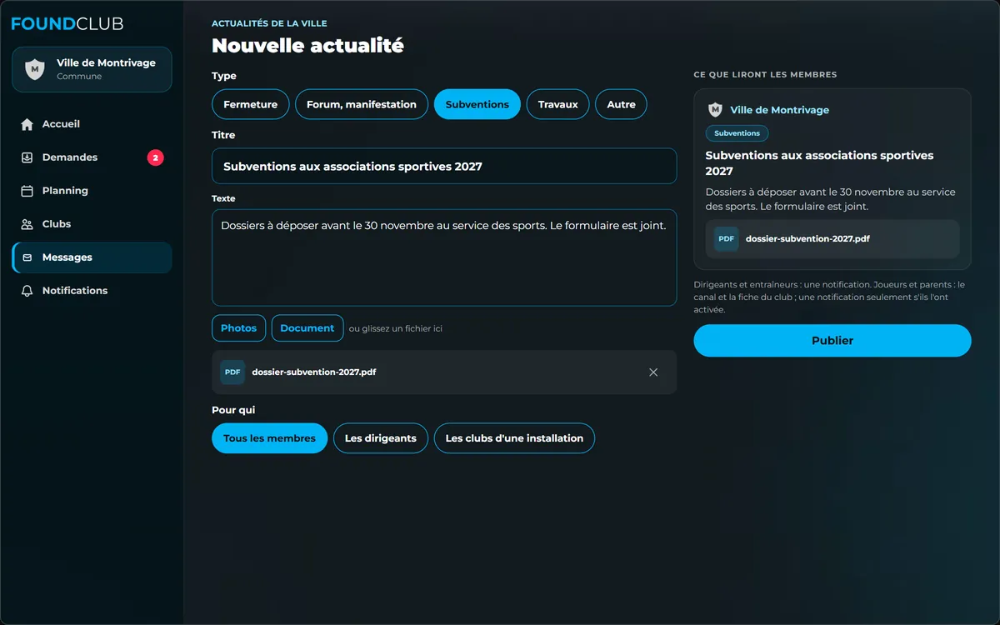

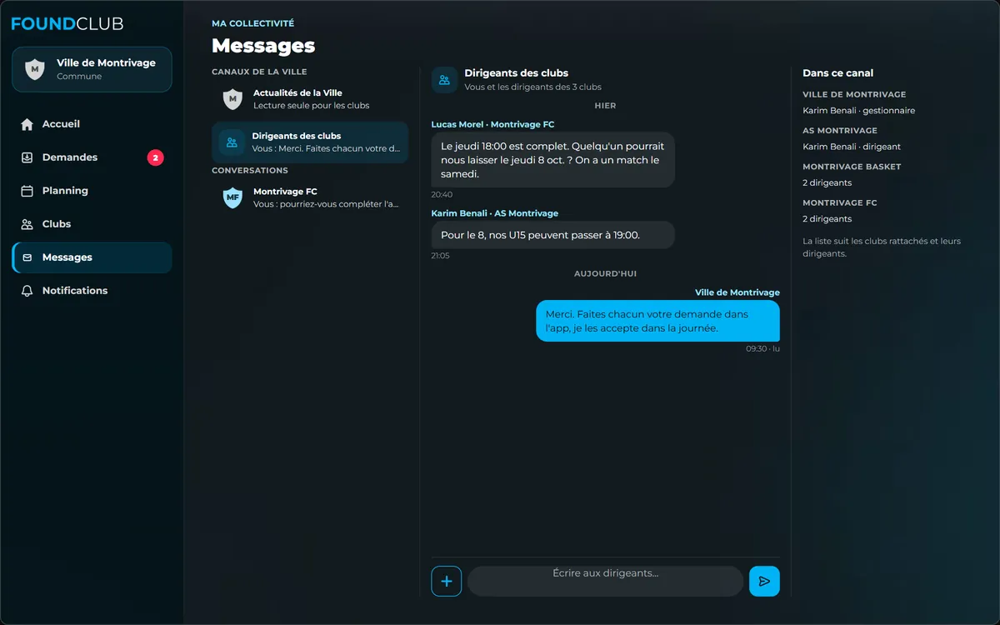
Vos clubs
Pour chaque club rattaché, son contact général, des nombres et le nom de ses dirigeants s'il le rend public : jamais ses joueurs ni ses parents. Un club absent de FoundClub s'inscrit par le lien de votre commune.

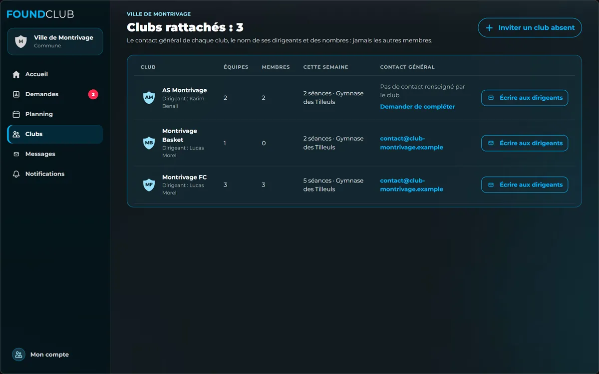

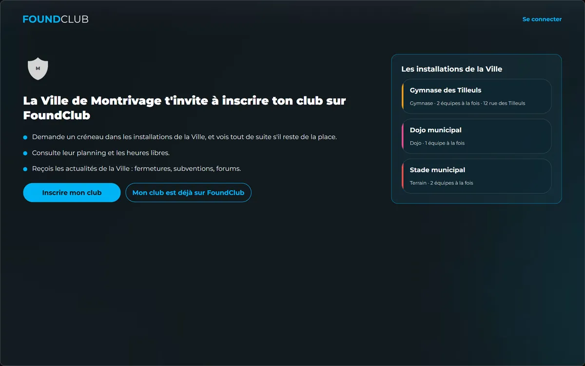
Côté club
Le club voit ses créneaux de la Ville et le planning de vos installations, demande un créneau en voyant tout de suite s'il reste de la place, et reçoit les nouvelles de la Ville.

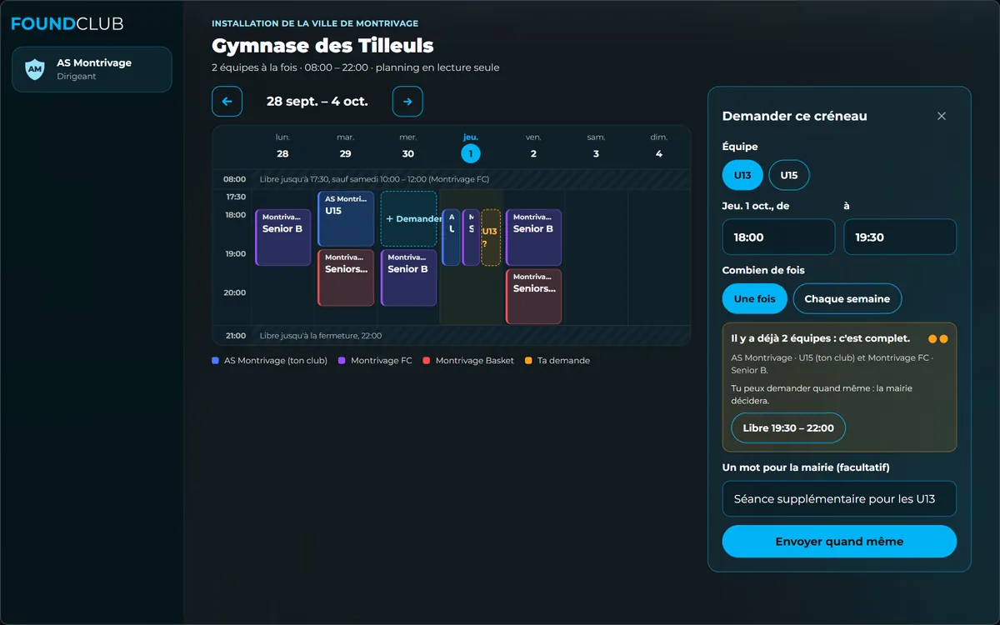

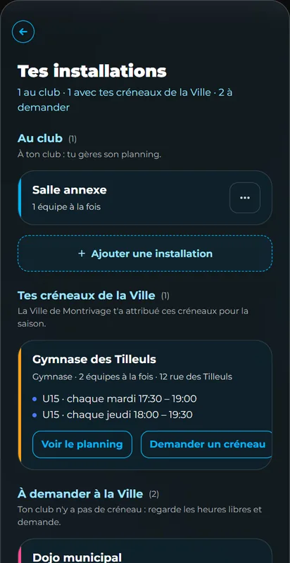

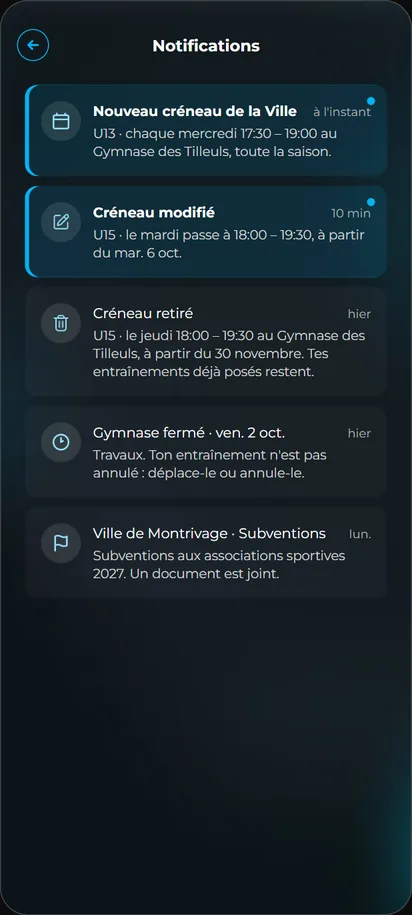
Pour commencer
Vous créez votre compte et choisissez « Je représente une collectivité ». L'équipe FoundClub vérifie que vous représentez bien la collectivité, puis ouvre votre espace.

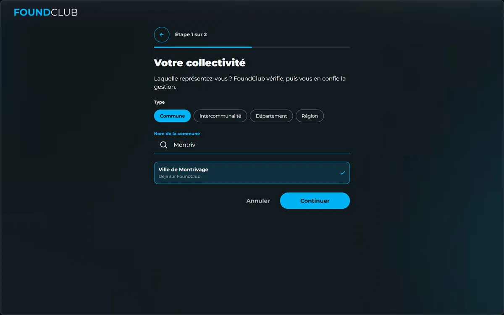
20 minutes, en visio ou à la mairie. Sur ordinateur, l'espace de la Ville s'ouvre dans le navigateur, sur foundclub.app ; sur téléphone, l'application est sur l'App Store et Google Play.